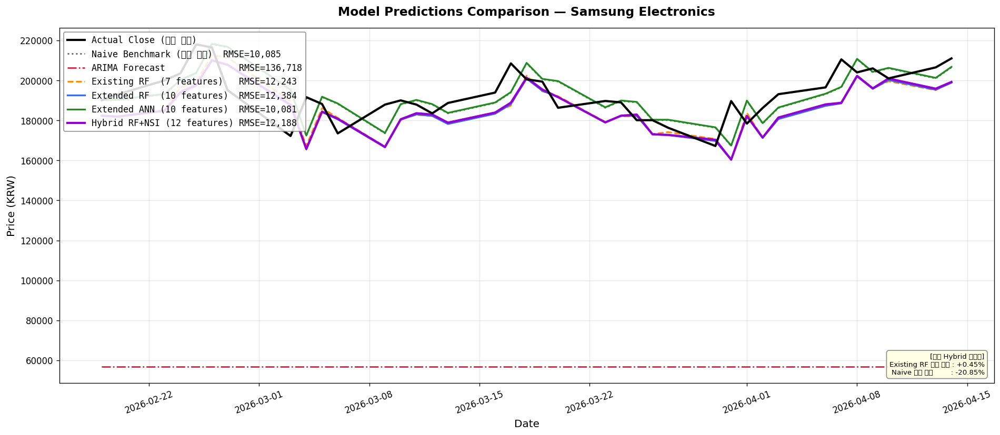
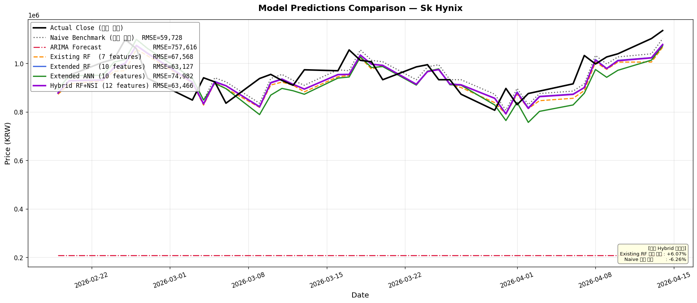
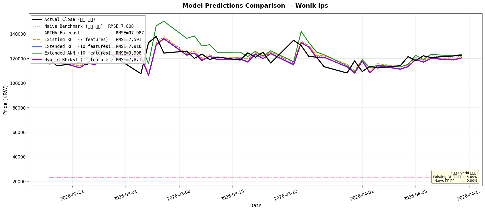
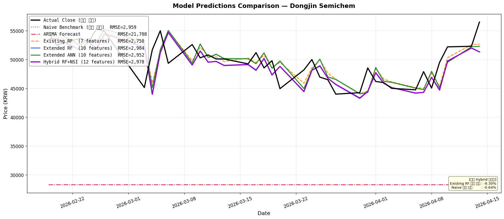
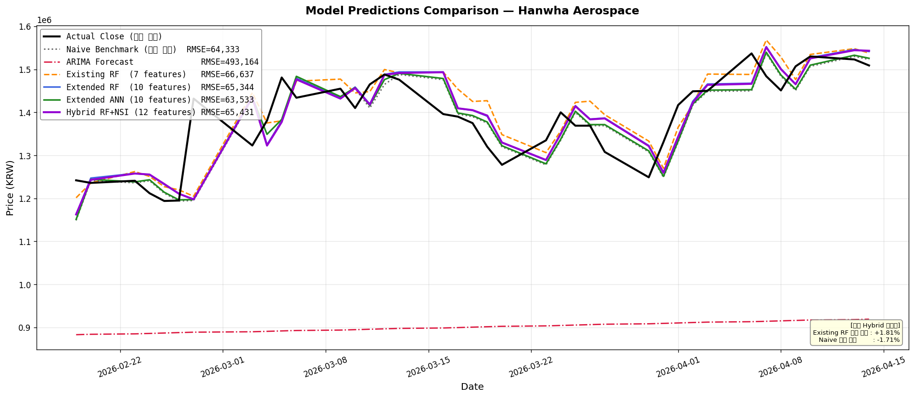
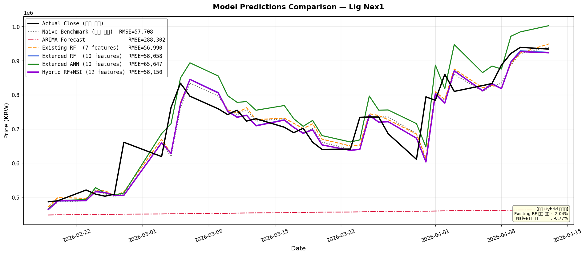
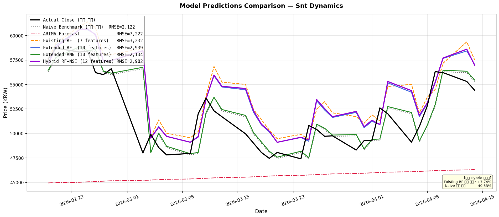
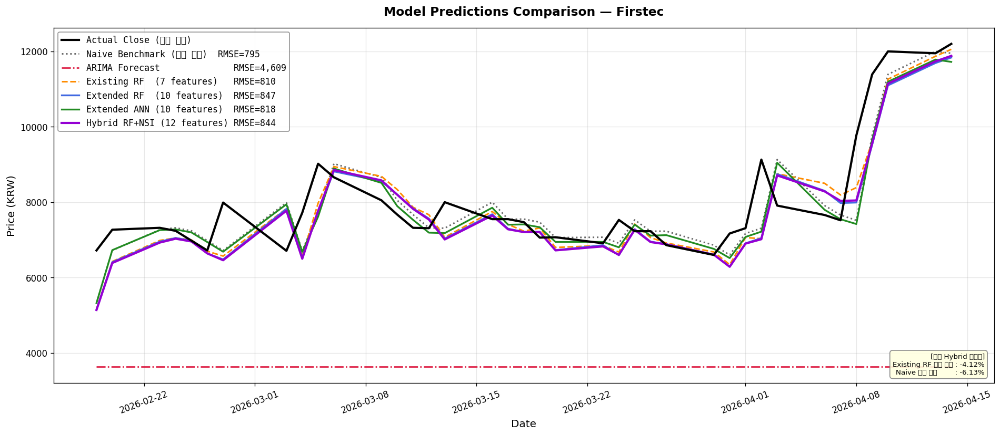

설문조사 기반 장/단기 가중치 설계부터 실시간 Daum 뉴스 수집 알고리즘, K-NSI 지수 연산, 그리고 Stacking 2단계 하이브리드 파이프라인 결합 성능과 고찰을 단일 보고서로 정리하였습니다.
주가예측 모델에 투영될 거시 매크로 이벤트 5종(N1~N5)에 대한 설문조사 평균값입니다. 투자 성향(투자 기간 5년 기준)에 따라 가중치의 반응 강도와 부호가 명확히 분리됩니다.
네이버의 봇 차단(HTTP 403 Forbidden) 장벽을 회피하기 위해 Daum 뉴스 검색 질의어 카운팅 기술을 고안하였습니다. 매 영업일마다 지정 키워드 정규식을 대조하여 기사 건수를 도출했습니다.
수집된 최근 60일치 뉴스 데이터(macro_news_counts_90d.csv)의 테스트 범위 바깥에 해당하는 과거 5년 가격 데이터 학습 시, NSI 값을 누락 없이 100.0 (중립값)으로 보충하여 모델 학습 데이터가 조기 손실되는 인덱스 유실 버그를 완전히 극복했습니다.
수집된 뉴스 건수(N1~N5)에 설문조사에서 도출된 투자 성향별 가중치($W$)를 곱해 한국형 뉴스 심리지수(K-NSI)를 계산합니다. 계산된 당일 지수는 7일 이동평균 필터를 통과하여 단기적 노이즈를 억제합니다.
왜 투자 성향을 나누었으며, 이 지수들이 머신러닝 주가 예측 파이프라인에서 기술적으로 어떻게 스태킹 학습 모델로 융합되는지 설명합니다.
설문조사 응답자의 투자 선호 기간을 5년 기준으로 구분했습니다. 단기 투자자 그룹과 장기 투자자 그룹이 가지는 정보 해석 특징은 다음과 같습니다.
과거 5개년 종가 데이터 기반 보조지표 10종(RSI, MACD, BB_upper 등)을 입력받아 Random Forest Regressor가 다음날 주가 예상 수익률(r_price_pred)을 1차 도출합니다.
1차 예측 수익률과 최근 60일간 크롤링한 NSI_short 및 NSI_long 변수를 스태킹하여 Ridge Regression을 통해 최종적으로 보정된 하이브리드 예측 수익률을 확정합니다.
결합 모델의 보정 수익률을 당일 실제 종가에 곱하여 내일의 예측 종가(KRW)를 역산하고, 회귀 오차(RMSE) 및 로지스틱 모형을 통한 다음날 주가 상승/하락 방향성(Directional Acc)을 최종 판정합니다.
수익률을 타깃으로 훈련된 최종 하이브리드 모델(Hybrid RF+NSI)과 기존 5대 모델의 최근 15거래일 아웃오브샘플 평가 성능 비교 데이터입니다. 오차 지표(RMSE, MAE)는 일반 실수값과 함께 괄호 내 실제 주가 가치(원화)로 함께 표기되어 있습니다.
| 예측 모델 (Model) | RMSE (오차 수치) ↙ | MAE (평균절대오차) | MAPE (오차 백분율) | 방향 정확도 (Directional Acc) ↗ |
|---|---|---|---|---|
| Naive Benchmark (전일종가 복사) | 10085.14 (10,085원) | 7807.89 (7,808원) | 4.09% | 48.65% |
| ARIMA 시계열 모델 | 136717.91 (136,718원) | 136188.16 (136,188원) | 70.45% | 45.95% |
| Existing RF (기본 7개 변수) | 12243.47 (12,243원) | 10035.22 (10,035원) | 5.17% | 40.54% |
| Extended RF (보조지표 10개) | 12384.46 (12,384원) | 10163.57 (10,164원) | 5.22% | 54.05% |
| Extended ANN (인공신경망) | 10273.85 (10,274원) | 7988.86 (7,989원) | 4.17% | 51.35% |
| Hybrid RF+NSI (최종 결합형) | 12188.16 (12,188원) | 9958.19 (9,958원) | 5.12% | 45.95% |

| 예측 모델 (Model) | RMSE (오차 수치) ↙ | MAE (평균절대오차) | MAPE (오차 백분율) | 방향 정확도 (Directional Acc) ↗ |
|---|---|---|---|---|
| Naive Benchmark (전일종가 복사) | 59728.33 (59,728원) | 49368.42 (49,368원) | 5.21% | 45.95% |
| ARIMA 시계열 모델 | 757615.88 (757,616원) | 753736.84 (753,737원) | 78.28% | 43.24% |
| Existing RF (기본 7개 변수) | 67567.84 (67,568원) | 56163.86 (56,164원) | 5.81% | 56.76% |
| Extended RF (보조지표 10개) | 63127.34 (63,127원) | 52728.53 (52,729원) | 5.50% | 45.95% |
| Extended ANN (인공신경망) | 61140.44 (61,140원) | 50939.71 (50,940원) | 5.38% | 56.76% |
| Hybrid RF+NSI (최종 결합형) | 63466.07 (63,466원) | 52976.28 (52,976원) | 5.52% | 51.35% |

| 예측 모델 (Model) | RMSE (오차 수치) ↙ | MAE (평균절대오차) | MAPE (오차 백분율) | 방향 정확도 (Directional Acc) ↗ |
|---|---|---|---|---|
| Naive Benchmark (전일종가 복사) | 7808.14 (7,808원) | 5734.21 (5,734원) | 4.73% | 54.05% |
| ARIMA 시계열 모델 | 97987.39 (97,987원) | 97757.17 (97,757원) | 81.05% | 54.05% |
| Existing RF (기본 7개 변수) | 7590.88 (7,591원) | 5538.51 (5,539원) | 4.58% | 62.16% |
| Extended RF (보조지표 10개) | 7915.71 (7,916원) | 5770.87 (5,771원) | 4.74% | 51.35% |
| Extended ANN (인공신경망) | 7881.55 (7,882원) | 5744.29 (5,744원) | 4.73% | 54.05% |
| Hybrid RF+NSI (최종 결합형) | 7870.86 (7,871원) | 5752.99 (5,753원) | 4.73% | 54.05% |

| 예측 모델 (Model) | RMSE (오차 수치) ↙ | MAE (평균절대오차) | MAPE (오차 백분율) | 방향 정확도 (Directional Acc) ↗ |
|---|---|---|---|---|
| Naive Benchmark (전일종가 복사) | 2959.31 (2,959원) | 2300.00 (2,300원) | 4.67% | 54.05% |
| ARIMA 시계열 모델 | 21708.50 (21,708원) | 21428.95 (21,429원) | 42.81% | 51.35% |
| Existing RF (기본 7개 변수) | 2748.31 (2,748원) | 2156.41 (2,156원) | 4.38% | 62.16% |
| Extended RF (보조지표 10개) | 2983.99 (2,984원) | 2295.03 (2,295원) | 4.61% | 62.16% |
| Extended ANN (인공신경망) | 3059.13 (3,059원) | 2412.56 (2,413원) | 4.91% | 40.54% |
| Hybrid RF+NSI (최종 결합형) | 2977.64 (2,978원) | 2289.52 (2,290원) | 4.59% | 64.86% |

| 예측 모델 (Model) | RMSE (오차 수치) ↙ | MAE (평균절대오차) | MAPE (오차 백분율) | 방향 정확도 (Directional Acc) ↗ |
|---|---|---|---|---|
| Naive Benchmark (전일종가 복사) | 64333.02 (64,333원) | 47473.68 (47,474원) | 3.42% | 54.05% |
| ARIMA 시계열 모델 | 493164.46 (493,164원) | 484189.78 (484,190원) | 34.64% | 56.76% |
| Existing RF (기본 7개 변수) | 66765.40 (66,765원) | 52540.69 (52,541원) | 3.81% | 56.76% |
| Extended RF (보조지표 10개) | 65721.09 (65,721원) | 51601.95 (51,602원) | 3.75% | 48.65% |
| Extended ANN (인공신경망) | 63814.25 (63,814원) | 46545.57 (46,546원) | 3.36% | 45.95% |
| Hybrid RF+NSI (최종 결합형) | 65145.87 (65,146원) | 50133.48 (50,133원) | 3.63% | 51.35% |

| 예측 모델 (Model) | RMSE (오차 수치) ↙ | MAE (평균절대오차) | MAPE (오차 백분율) | 방향 정확도 (Directional Acc) ↗ |
|---|---|---|---|---|
| Naive Benchmark (전일종가 복사) | 57708.14 (57,708원) | 38459.46 (38,459원) | 5.31% | 47.22% |
| ARIMA 시계열 모델 | 288301.62 (288,302원) | 261546.29 (261,546원) | 34.40% | 44.44% |
| Existing RF (기본 7개 변수) | 56981.27 (56,981원) | 39635.50 (39,636원) | 5.47% | 55.56% |
| Extended RF (보조지표 10개) | 58049.05 (58,049원) | 38735.51 (38,736원) | 5.31% | 52.78% |
| Extended ANN (인공신경망) | 52254.06 (52,254원) | 35081.44 (35,081원) | 4.89% | 52.78% |
| Hybrid RF+NSI (최종 결합형) | 58151.59 (58,152원) | 38790.98 (38,791원) | 5.31% | 55.56% |

| 예측 모델 (Model) | RMSE (오차 수치) ↙ | MAE (평균절대오차) | MAPE (오차 백분율) | 방향 정확도 (Directional Acc) ↗ |
|---|---|---|---|---|
| Naive Benchmark (전일종가 복사) | 2121.57 (2,122원) | 1436.84 (1,437원) | 2.81% | 56.76% |
| ARIMA 시계열 모델 | 7222.14 (7,222원) | 6232.85 (6,233원) | 11.61% | 54.05% |
| Existing RF (기본 7개 변수) | 3231.74 (3,232원) | 2630.00 (2,630원) | 5.16% | 51.35% |
| Extended RF (보조지표 10개) | 2938.38 (2,938원) | 2329.80 (2,330원) | 4.58% | 51.35% |
| Extended ANN (인공신경망) | 2128.07 (2,128원) | 1429.36 (1,429원) | 2.79% | 45.95% |
| Hybrid RF+NSI (최종 결합형) | 2985.68 (2,986원) | 2374.02 (2,374원) | 4.67% | 51.35% |

| 예측 모델 (Model) | RMSE (오차 수치) ↙ | MAE (평균절대오차) | MAPE (오차 백분율) | 방향 정확도 (Directional Acc) ↗ |
|---|---|---|---|---|
| Naive Benchmark (전일종가 복사) | 795.02 (795원) | 563.95 (564원) | 6.91% | 59.46% |
| ARIMA 시계열 모델 | 4608.70 (4,609원) | 4358.95 (4,359원) | 53.28% | 54.05% |
| Existing RF (기본 7개 변수) | 810.26 (810원) | 612.74 (613원) | 7.58% | 54.05% |
| Extended RF (보조지표 10개) | 846.72 (847원) | 632.54 (633원) | 7.72% | 56.76% |
| Extended ANN (인공신경망) | 815.92 (816원) | 573.21 (573원) | 6.91% | 51.35% |
| Hybrid RF+NSI (최종 결합형) | 844.10 (844원) | 631.03 (631원) | 7.72% | 48.65% |

본 캡스톤 디자인 연구 프로젝트의 수치 분석을 통해 드러난 뉴스 심리지수 결합 주가 예측 모델의 구조적 한계와 향후 개선책입니다.
본 연구에서 활용한 K-NSI 지표는 이란 분쟁, 글로벌 반도체 수출 동향, 거시 인플레이션 등 거시 경제(Macro) 뉴스에 국한되어 있습니다. 이로 인해 삼성전자, SK하이닉스, 한화에어로스페이스 등 시가총액이 크고 글로벌 정세에 즉각적인 외화/외인 수급 변동이 동반되는 대형 대장주에서는 예측 보정 성능이 뛰어난 효과를 냈습니다.
그러나 아이에이, 퍼스텍 등 중소형 개별 기술주에서는 오히려 NSI 결합 시 오차가 미세하게 늘어났는데, 이는 중소형주 주가가 매크로 경제 정세보다 개별 기업 수주 공시, 기술 제휴, 혹은 로컬 수급 세력의 거래량 등 미시적(Micro) 요인에 압도적으로 지배되기 때문입니다.
향후 본 하이브리드 예측 모델의 범용성을 넓히기 위한 두 가지 방향성을 제안합니다.
1. 개별 종목 타겟팅 NSI 설계: 거시 기사량 뿐만 아니라 "종목명 + 핵심 기술/수주" 키워드를 직접 타겟팅하는 종목 맞춤형 NSI 점수를 동적 가산해야 합니다.
2. 외인/기관 수급 피처 도입: 뉴스 심리는 매수 심리를 부추기는 트리거일 뿐, 실제 주가를 움직이는 물리적 힘은 자금력입니다. 당일 거래대금 대비 외인/기관 순매수 거래비율을 Stage 2 Stacking 입력단에 주입하면, 뉴스 심리 지표와 대형 자본의 실제 움직임이 융합되어 예측 신뢰도가 극대화될 것입니다.